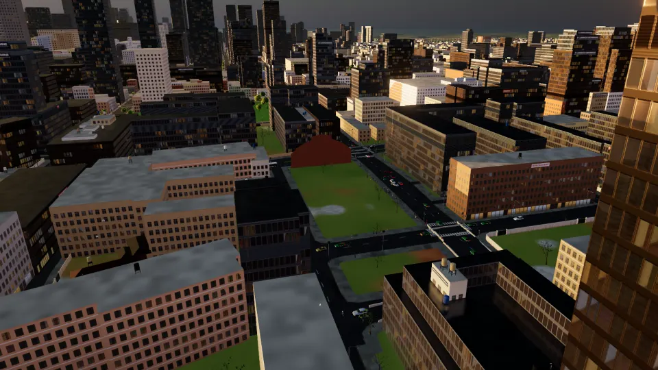
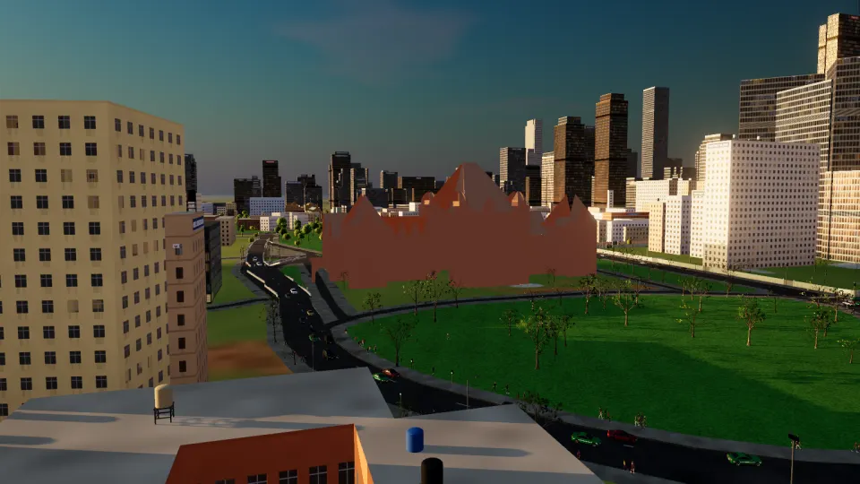
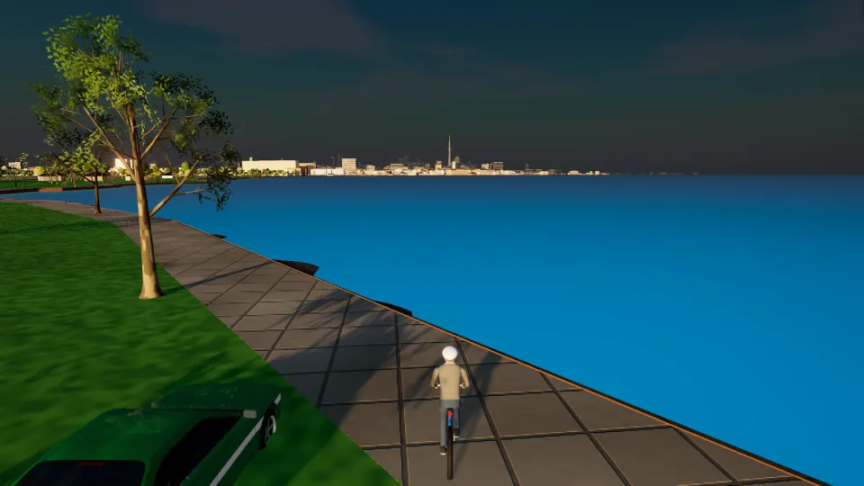

Search like a map app
Type a place, a street, a neighbourhood or just “café”. Suggestions appear as you type, nearest first, typos forgiven.
Toronto, on Lake Ontario
Downtown Toronto and the waterfront in 3D, in your browser. Cycle the lake from the Humber Bay Arch Bridge to Sugar Beach, or walk, drive and fly past the CN Tower and through the downtown streets.
Start somewhere iconic
Pick a sight and you arrive on the street in front of it, facing it. Everything around it is there too: the roads, the traffic, the people. Every picture here is the app itself.


A map you can step into
Type a place, a street, a neighbourhood or just “café”. Suggestions appear as you type, nearest first, typos forgiven.
From where you stand, or from anywhere, to anywhere. By car (one-way streets obeyed), on foot or by bicycle, with every turn spelled out.
Follow the blue line on the road with live turn-by-turn guidance, or switch on Tour Drive and the guide takes you there, stopping at red lights.

Built from open data
Every footprint and height from the City of Toronto's 3D Massing. The façades are the engine's own: no photographs.
OpenStreetMap's roads with their lanes and one-way streets, laid on the City's edge-of-roadway map, signals where they are mapped.
Street trees, fire hydrants and bike rings where the City's open data puts them.
The lake, the harbour and the shoreline from OpenStreetMap; the terrain from SRTM. The sky and the water are art, not a forecast.
Slop Toronto runs in your browser and needs WebGPU: a recent Chrome or Edge on a laptop or desktop works best.
Explore TorontoYour browser doesn't seem to support WebGPU yet. Try the latest Chrome or Edge.